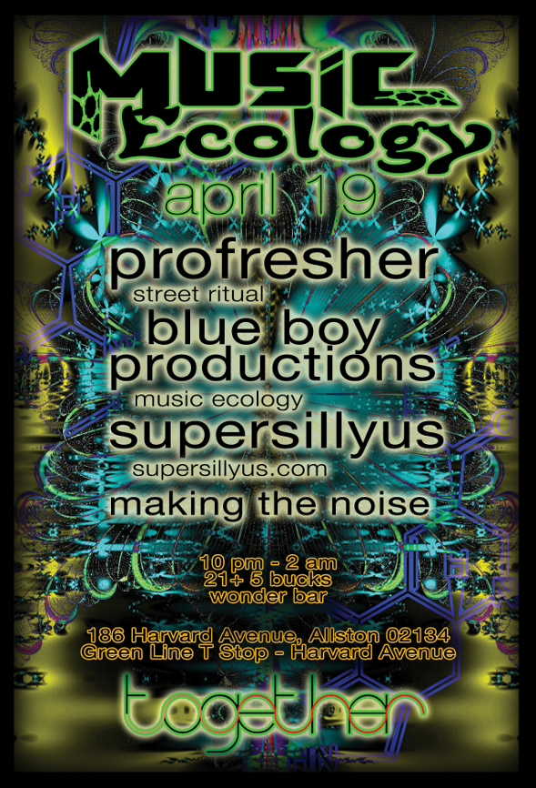

April 19, 2011, 10 p.m. at Wonder Bar
(Comments)

Music Ecology Presents a very special Together Festival Showcase
with 2 floors of future electronic dance music!
We thank
the masterminds behind Together for all of their
hard work in making this festival a reality.
$5, 21+, 10
PM
Come early for some delicious eatable concoctions
courtesy of Deven Smith. They are usually gone very fast.
Upstairs
line-up:
10 PM Making the Noise (IDM,
Dubstep)
11 PM
Supersillyus (Psychodub)
12 AM
Blue Boy Productions (Live EDM)
1 AM
Profresher (Glitchhop)
Profresher
Profresher AKA Billy Blacklight according to some is
responsible for a "Crunk-flavored beats and 'neo-g-funk' basslines
set a bold stage for the crisp synth lines that cruise on top.
Listening to the album from beginning to end is like playing the PS1
Gran Turismo in a subwoofer-laden submarine while sippin' on some
'tussin. There's a late-90s throwback vibe throughout, as well as
enough bass to make even the skinniest booty clap 'til dawn."
http://soundcloud.com/profresher
http://billyblacklight.bandcamp.com/
Blue Boy Productions (Music
Ecology)
BBP is a project specializing in intense bass heavy
dance music that spans the genres of EDM, blending live instruments
with samples and original productions in a way that allows for real
improvisation and unrehearsed moments of creativity and
spontaneity.
Since their live debut in April 2009 BBP has
played shows with OTT, Bluetech, Eskmo, Jazzsteppa, RAQ, Telepath,
Big Gigantic, Emancipator, Marco Benevento Trio, Eliot Lipp, Psylab,
Beam & Deem, Sonic Spank, Blockhead, Biodiesel, Jeff Bujak,
Zebbler Encanti Experience, Afro Monk, Superfiction, The
Hippocampus, Joe Nice, and many more, as well as late night sets at
underground afterparties for The Disco Biscuits, STS9, and Shpongle.
The future will see BBP performing shows with some of the best EDM
acts at venues throughout New England and at Wonder Bar in Allston,
Massachusetts where they produce Music Ecology - a weekly Tuesday
night underground electronic dance party.
http://www.blueboyproductions.net/
Supersillyus
Supersillyus
is an electronic musician and producer based in Allston, MA. His
music is a genre-bending adventure through psychedelic dub. He has
opened for acts such as Hallucinogen, Conspirator, Archnemesis,
EOTO, DJ Logic, and Alex B (of Pnuma Trio). His first full length
release, Grampaspaceshuttle, tickled the ears of the electronic
community, earning him a spot on LostinSound.org's Top 5 Newcomer
Albums of 2010.
He has spent... the past year and three
months meticulously crafting his second record,
“Tesselations,” which will be released this March on
Base Trip Records. The result is an epic double album that will
allow listeners to explore highly evolved and extensively layered
soundscapes while shaking it to a tasty mix of tribal drums,
swirling synths, and the occasional marimba solo.
http://supersillyus.com/
http://www.facebook.com/Supersillyus
Making the Noise
Making the
noise is an alias of Adam Ribaudo, a Boston-based producer who
delivers cerebral electronic music that varies from lush airy
sonicscapes to dirty glitchy beats. Using an assortment of custom or
self-made software and hardware components to keep his music organic
and spontaneous, mtn makes laptop music that doesn't hide behind the
laptop.
For 10 years, Adam has crafted an original sound
that stands out as fresh voice in the growing body of electronic
artists. Not being tied to any single genre or BPM has allowed his
musical identiy to morph over time yet consistently producing output
that stands on a threshold of accessibility and experimentation.
Helping
shape his output is the ultra minimal but fully functional monome
controller with which consists of a grid of LED lights running
software of his own creation. Recently he's begun generating visuals
to marry to his sound using tools like Processing and the Xbox
Kinect.
His live set ever-changing as he seeks to feed
the crowd's rections reaction back into the enthusiasm and energy he
brings to a performance. Mtn has learned from DJ's how to blend
sounds and get the audience to move, but prefers to do so with
entirely original material that can't be duplicated by anyone else
and keeps the moment unique in time.
http://www.makingthenoise.com/
Downstairs line-up
Music from 10 PM until 1
AM will feature tag sets from
Reset From Start
vs The Statemen (DnB) and
Jeff Mission
vs Deph (Techno)
Visuals by our
resident VJ Shmeejay
Photography by
Dave Foresman
10 PM, $5, 21+
186
Harvard Avenue in Allston
"Harvard Avenue" stop on Green line
B
For this and future events please visit
http://www.musicecologyboston.com/
or find us on Facebook at
http://www.facebook.com/MusicEcology
Promotional assistance provided by:
LostinSound
http://www.lostinsound.org/
and Forbidden Bass Crew
http://www.facebook.com/group.php?gid=365770374790
Wonder Bar
186 Harvard Avenue
Allston, MA
02134-2806
Get Directions
Archive
2014
2013
- December (1)
- November (4)
- October (2)
- September (5)
- August (2)
- July (4)
- June (4)
- May (3)
- April (5)
- March (5)
- February (6)
- January (4)
2012
- December (6)
- November (6)
- October (6)
- September (4)
- August (5)
- July (6)
- June (5)
- May (6)
- April (5)
- March (5)
- February (5)
- January (6)
2011
- December (5)
- November (5)
- October (4)
- September (5)
- August (3)
- July (2)
- June (4)
- May (5)
- April (4)
- March (6)
- February (5)
- January (4)
2010
- December (5)
- November (5)
- October (5)
- September (4)
- August (2)
- July (4)
- June (6)
- May (5)
- April (4)
- March (5)
- February (5)
- January (1)
Locations
- Brighton Music Hall (1)
- Good Life (1)
- Machine Nightclub (13)
- Middle East Corner (1)
- Middle East Upstairs (4)
- Phoenix Landing (1)
- Royale Boston (2)
- South Shore Music Hall (1)
- T.T. the Bear's Place (1)
- The Sinclair (1)
- The Stone Church (1)
- Wonder Bar (190)
- Wonder Bar - DOWNSTAIRS (2)
Connect
Comments